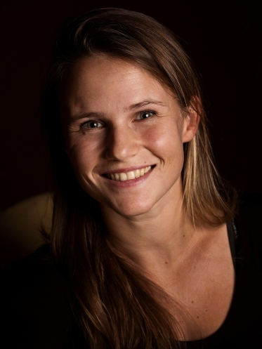

My movement background is 20 years of traditional karate-do. Due to my sensei (teacher) I had the opportunity to understand the meaning of the word "training".
I love my own challenges that might not merge with opinions of others. However, they merge with my inner desire for discovery - ultramarathon runs (130 km), run from the north to the south of Czech Republic in 5 days, cycling trip from Czech to Greece, walking trip to Italy, 50 000 rope skips in 7 hours, run from Brno to Bratislava - 7 marathons in 7 days, Everesting in tandem (run 8848 ascent meters in one day) etc.
Since I was 18, I have been organising Miroslav's Camp - Matters of The Heart (Level 5 of difficulty from all our events).
I lead group training based on movement and try to be the best possible guide on the trip of self-exploration - similar to Ido Portal method, gymnastic bodies foundation etc.
I regularly participate in ultramarathon and obstacle races. I train in a way so I can do everything I love. My body is a temple I like to "visit" every day.
I believe our purpose of life is where we feel some kind of obsession which fills us with joy.

Lia Tomat
Coming from a dance background, it was no surprise that I became a performer. My main focus is physical theatre, which combines both of my favourite things - movement and acting.
I have a wide variety of experience in artistic work, including visual and physical performance, experimental and devising projects, creative writing, directing and choreography.
My ability to create and freedom to explore are what I value most. They keep me sane and connect me to the world.
I find great comfort in quietly observing animals be animals. It’s the same with cats, wolves, deer, monkeys, elephants, or fish - they don’t care what you look like or if your paycheck hasn’t come.
I am extremely curious about everything. I dream, observe, remember, and try to learn new words in any language possible.
Pavel Milička (Hop)
I have been active in sports since I was 13. I started with 4 years of ju-jutsu and then transitioned to ultimate frisbee, which I've been playing ever since on a competitive level. I represented Czech Republic at the European Beach Ultimate Championship in 2019 and have attended European League with the Prague Devils every year since I moved to Prague.
Apart from the ultimate frisbee that is my passion, I enjoy almost every sport or movement. I occasionally run, do yoga, play squash, climb, etc. The only thing I just cannot get right is learning how to swim properly.
I was talked into many crazy things, usually far beyond my level, by the main organizer, Míra. I've attended his camp in Miroslav almost 10 times, we've done overnight hikes and even performed with nunchaku at various events. This taught me that limits and boundaries are overrated and that great strength, endurance, and perseverance can be unleashed with the right guidance or motivation.
I am a proud nerd. I work in the field of machine learning and computer science and have a strong urge to know how things work. I am an occasional gamer, who loves learning about the lore and stories of made up worlds.
If I cannot get under 70 kg until our camp, I vow to buy a beer to each attendant who will ask: "Hey, are you under 70?".